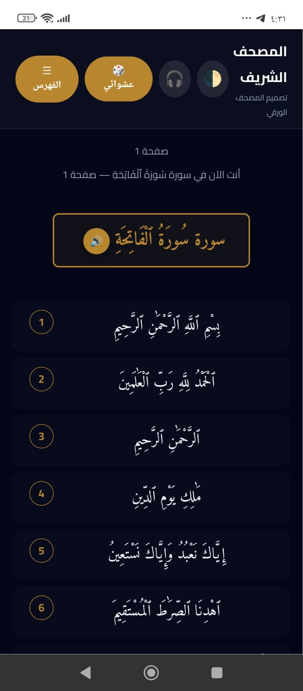
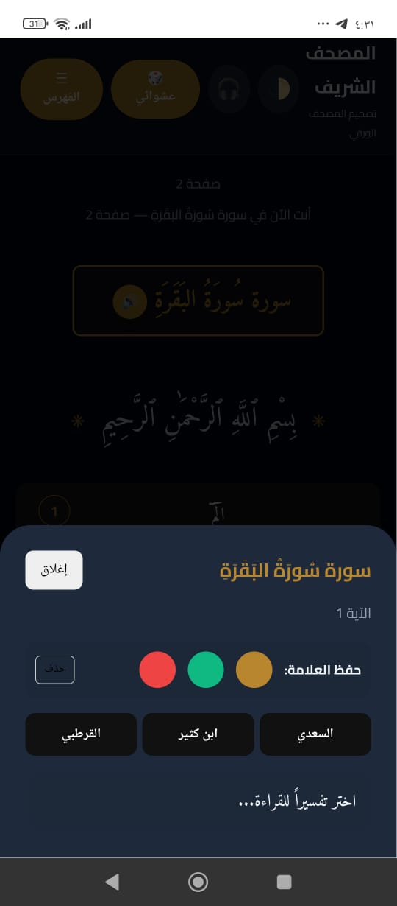
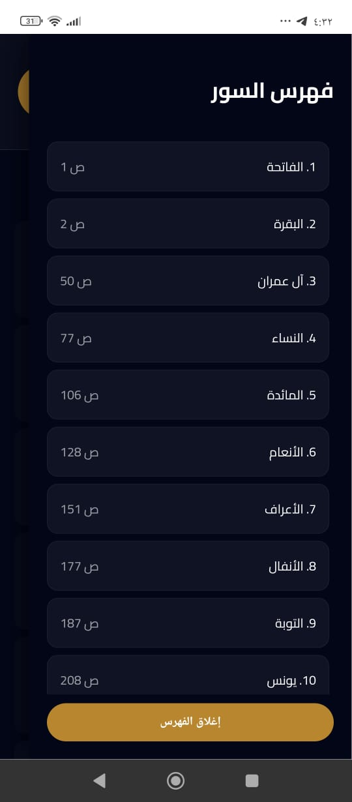

✨ مميزات التطبيق
📖 قراءة مريحة
واجهة تشبه المصحف الورقي مع خطوط واضحة ودعم الوضع الليلي.
🔊 استماع للقرآن
تشغيل صوتي للسور بجودة عالية من مصادر موثوقة.
🔍 بحث ذكي
البحث في السور والآيات بسرعة وسهولة.
🧩 مفتوح المصدر
الكود متاح للجميع على GitHub للمراجعة والتطوير.
📱 لقطات من التطبيق


